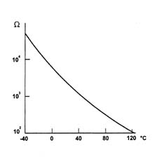

1060GE Excess pressure sensor operation check
- Path
- Test > 10 ENGINE > 1060 DIESEL FUEL INJECTION > 1060G pressure pump electric control > 1060GE Excess pressure sensor operation check
- Kind
- test / check procedure
- Applies to
- engines: 1.9 JTD 8v , 2.4 JTD 10v; all production periods
- Interactive page
- https://sloeber94.github.io/elrnDB-a156/en/#/3239155
Applies to: engines: 1.9 JTD 8v , 2.4 JTD 10v; all production periods
Make sure that the ignition is in the OFF position, then disconnect the negative battery terminal (refer to op. 5530B10 battery - r+r ).
Disconnect the electrical connection from the supercharging pressure.
 | Name | Connector |
|---|---|---|
- | Turbocharging sensor |
Check that the nominal resistance of the supercharging pressure sensor corresponds to the recommended value.
 | Measurement | Value | |
|---|---|---|---|
- | Nominal resistance (ohm) | at +20°C | 2500 +/- 5% |
